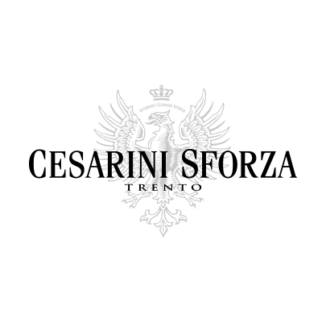
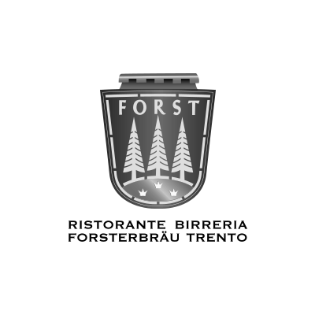
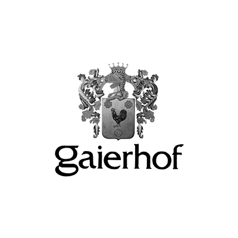

Rendere semplice ciò che non è immediato è il nostro mestiere.
Siamo al 100% digital, niente è escluso.
Esserci non basta. Vi aiutiamo a farvi conoscere.
Non ci teniamo tutto per noi. Vi aiutiamo a camminare.
Grandi spedizioni, veloci prenotazioni. Easytrucking è il nuovo servizio smart ideato per aziende e privati che desiderano spedire grandi quantità di merce in pochi click e al giusto prezzo. Per loro abbiamo studiato il nuovo marchio, il sito internet...
L’italianità in un capo, il look giusto per ogni occasione. La sartorialità di Più & Più si ritrova a pieno nell’approccio sartoriale di made in cima al digital: cuciamo il sito addosso ai nostri clienti. Da oltre 40 anni l’azienda si dedica...
Più valore agli immobili. Otto leader delle costruzioni, riuniti in un unico consorzio per la riqualificazione di edifici. Per loro abbiamo creato il sito internet, la newsletter e un tool online per la misura dei consumi. REbuilding network nasce...
Un'azienda leader da oltre 20 anni nei pavimenti in legno biocompatibili ispirati al benessere. Per loro abbiamo realizzato un nuovo sito web in grado di comunicare al meglio l'identità unica del marchio. Siamo partiti dall’obiettivo del cliente...
Ristorante e birreria del gruppo Forst a Trento, "il" ristorante tipico per eccellenza della città. Abbiamo curato design, sviluppo e realizzazione del nuovo sito web responsive. Quando un trentino dice “Forst” pensa immediatamente al ristorante...
I più visitati tra I cinque mercatini originali dell'Alto Adige. Per l'APT di Merano abbiamo realizzato il sito web e curiamo dal 2012 la comunicazione sui social media e le attività di web marketing. Un numero così imponente di visitatori richiede...